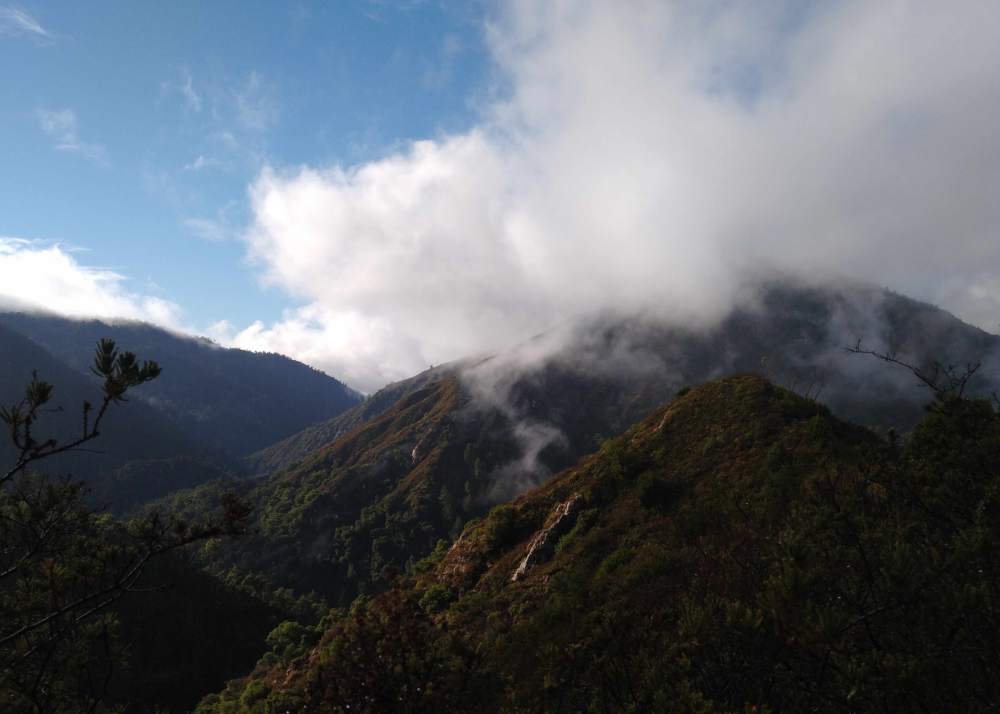
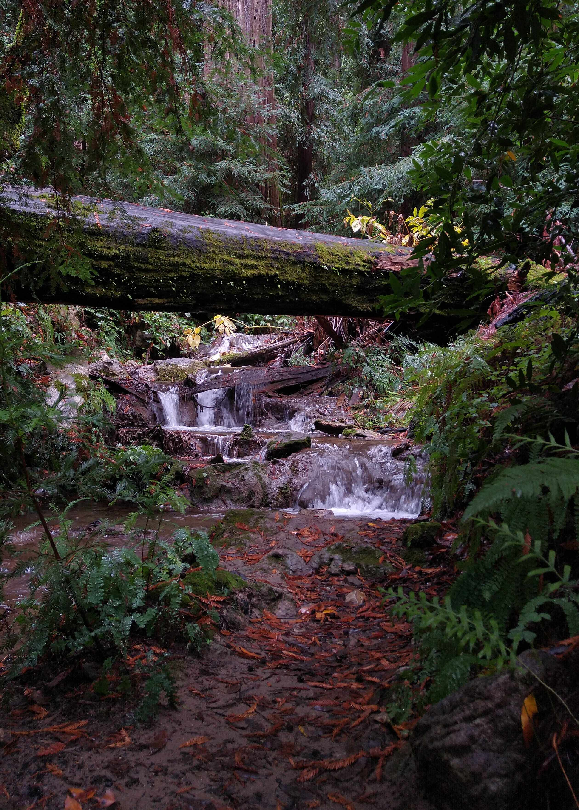

1 / 20
The handrails in this photo provide leading lines that guide the viewer's eye up the stairs. Horizontal lines add stability to the photo.
2 / 20

Caption Two
3 / 20

This photo includes both geometric shapes (the windows of the cafeteria), as well as the organic shape formed by the leaves of the tree.
4 / 20
This photo includes both geometric shapes (the windows of the cafeteria), as well as the organic shape formed by the leaves of the tree.
5 / 20
This photo includes both geometric shapes (the windows of the cafeteria), as well as the organic shape formed by the leaves of the tree.
6 / 20
This photo includes both harsh shadows and highlights caused by the strong sunlight the photo was taken in..
7 / 20
There is a lot of negative space at the top of this photo, which draws attention to the palm tree and sunset.
8 / 20

This representation of symmetrical balance uses a stand of trees to balance with buildings on the right. Taken at Stanford.
9 / 20

The petals in this photo extend from the center of the flower, making it an example of radial balance.
10 / 20

This photo representing asymmetrical balance was taken on a backpacking trip in Big Sur.
11 / 20

This photo not only has contrast in the elements of the photo, but also thematically contrasts civilization (the trail) and nature.
12 / 20
Name spellout: admittedly, some of these letters are not the best, but many of my other letters are better.
13 / 20

Created using an image of a flower and several canvases, rotated a few degrees after each round of pasting.
14 / 20

A photo of a beach at Point Reyes, taken after a backpacking trip. Represents change, as the ocean continually reshapes the geography of the Earth.
15 / 20

A closeup of small plants after a rainy day. It was intended to look like a (small) jungle.
16 / 20
Featuring the remarkable skier Edwin, who appears to hold the sun in his hands above his head. Taken at Donner Ranch Ski Resort.
17 / 20